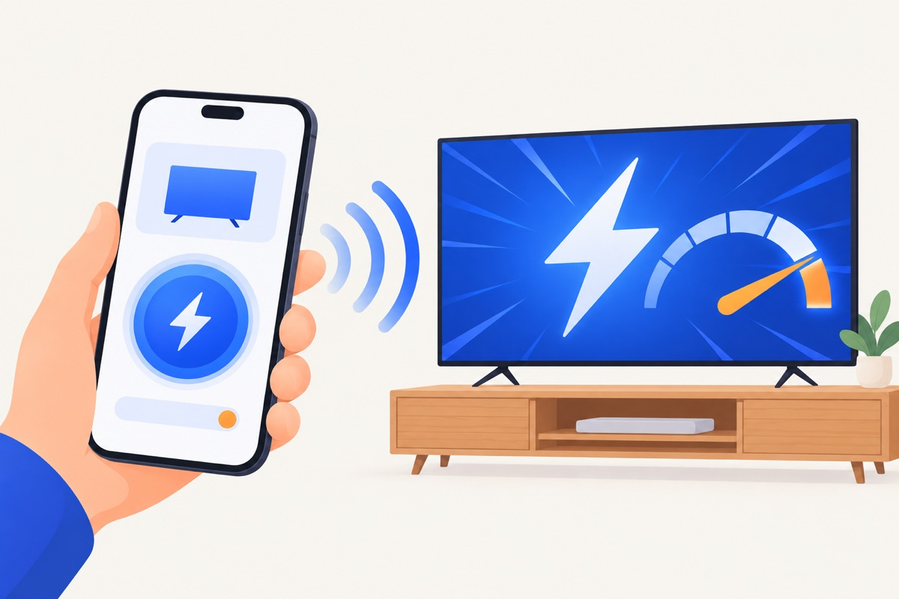

TidyTV
Make a slow Android TV or Google TV fast again, from your phone. TidyTV switches off the tracking, promo and shop-demo services the maker leaves running, and lets you bring any of them back with one switch.
Rendi di nuovo veloce una Android TV o Google TV lenta, dal telefono. TidyTV spegne i servizi di tracciamento, promozioni e demo da negozio che il produttore lascia accesi, e ti fa riaccendere qualsiasi app con un interruttore.
- Nothing is uninstalled. Apps are only switched off.
- Non disinstalla niente. Le app vengono solo spente.
- Free scan and free undo. Pay only to speed up the TV.
- Analisi e ripristino gratis. Paghi solo per velocizzare la TV.
- No account, no data collected.
- Nessun account, nessun dato raccolto.

Getting started
Come iniziare
- On the TV: Settings › System › About, press Build 7 times until it says you are a developer.
- Sulla TV: Impostazioni › Sistema › Info, premi 7 volte su Build finché dice che sei sviluppatore.
- Settings › System › Developer options: turn on USB debugging (and Network debugging or Wireless debugging, whichever is listed).
- Impostazioni › Sistema › Opzioni sviluppatore: attiva Debug USB (e Debug di rete o Debug wireless, quello che c'è).
- Keep your phone and the TV on the same Wi-Fi, open TidyTV and tap Add a TV. Accept the prompt on the TV with the remote.
- Tieni telefono e TV sulla stessa Wi-Fi, apri TidyTV e tocca Aggiungi una TV. Accetta la richiesta sulla TV con il telecomando.
Which TVs
Su quali TV
Android TV and Google TV sets and boxes: TCL, Sony, Xiaomi, Philips, Hisense (Android), Nvidia Shield, Chromecast and most others. Samsung (Tizen), LG (webOS) and Hisense VIDAA are not Android and are not supported.
TV e box Android TV e Google TV: TCL, Sony, Xiaomi, Philips, Hisense (Android), Nvidia Shield, Chromecast e quasi tutte le altre. Samsung (Tizen), LG (webOS) e Hisense VIDAA non sono Android e non sono supportate.
Questions
Domande
Something stopped working on the TV.
Qualcosa sulla TV non funziona più.
Open the TV in TidyTV, go to Switched-off apps and turn that app back on, or use Restore to put everything back. A factory reset of the TV also brings everything back.
Apri la TV in TidyTV, vai in App spente e riaccendi quell'app, oppure usa Ripristina per rimettere tutto com'era. Anche il ripristino di fabbrica della TV riporta tutto com'era.
The app cannot find or reach my TV.
L'app non trova o non raggiunge la TV.
The TV must be on (not in standby), on the same Wi-Fi as the phone, with debugging turned on. Some routers isolate devices on a guest network: use the main network.
La TV deve essere accesa (non in standby), sulla stessa Wi-Fi del telefono, con il debug attivo. Alcuni router isolano i dispositivi nella rete ospiti: usa la rete principale.
Does it void the warranty?
Fa decadere la garanzia?
It only uses the standard Developer options: no root, no unlocking, nothing uninstalled.
Usa solo le normali Opzioni sviluppatore: niente root, niente sblocchi, niente disinstallato.
Refunds
Rimborsi
Purchases are refunded by the store you bought from (App Store or Google Play).
I rimborsi li gestisce lo store dove hai acquistato (App Store o Google Play).
Contact
Contatti
roberto.chiarelladev@gmail.com · Privacy policyPrivacy
TidyTV is not affiliated with Google or any TV maker. Android TV and Google TV are trademarks of Google LLC.
TidyTV non è affiliata con Google né con alcun produttore di TV. Android TV e Google TV sono marchi di Google LLC.